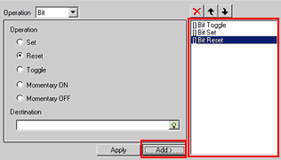
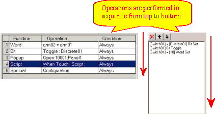
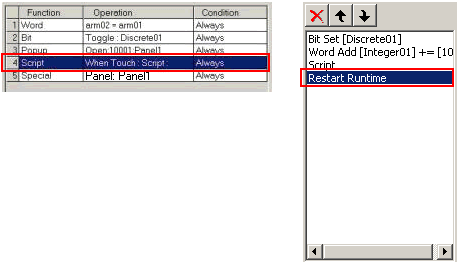
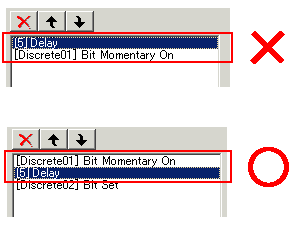
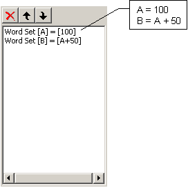

|
|
|
|
|
|
|
|
You can set up multiple operations to run when your selector, switch, or Function Key is touched or your action conditions are met. For Actions, Switches, and Function Keys the total number of operations you can set up is 32. When you are working with Selectors, each state can be set up with a maximum of 16 operations.

Use the following buttons to add or remove operations.
|
Button |
Description |
|
Add |
Adds a new line at the end of the list. |
|
Apply |
Updates the selected line with the current settings. |
|
Deletes the selected line. |
|
|
Moves one line up in the list box. |
|
|
Moves one line down in the list box. |
At Runtime, if you touch an object configured with multiple operations, all operations (from the first line to the last line) will execute consecutively.

However, subsequent lines will not execute if a Popup window panel is active and the Popup window panel is closed or the panel is switched on the Popup window.

Only one change panel operation or runtime operation is allowed. This operation will display on the last row, as shown below.

You cannot set up a delay operation before a momentary ON/OFF operation.

When touch areas on different objects overlap, whether these objects are switches or Touch animated, only the Touch operation for the object on top is executed. The Touch operation for the object at the back will not execute.

Do not make operations dependent on other operations because unexpected behavior may occur. Although each operation is executed in the specified order, subsequent operations do not wait for previous operations to complete before running.
For example, the following scenario illustrates a part with two Word Set operations.

Some Panel Function Key operations will stop other operations in the operation list from running. For example, if you have set Previous Panel as the first operation to run, the operations that come after the Previous Panel operations will not execute . Below is a list of the operations that will stop any operation that comes after it from running:
Previous Panel
Restart Runtime
Exit Runtime
Configuration
Change Panel